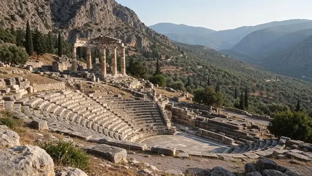

Οικονομία
Νέο πλαίσιο για τα ενοίκια: τι αλλάζει από τον Ιανουάριο για ιδιοκτήτες και ενοικιαστές
πριν από 8′ · 6′
Δημοσκόπηση
Πώς μαθαίνετε τις ειδήσεις τις περισσότερες φορές;

Κοινωνία
Φοιτητικές εστίες: ουρές για ένα δωμάτιο και ενοίκια που «τρέχουν»
πριν από 34′ · 5′

Ελλάδα
Πειραιάς: χειμερινή σεζόν κρουαζιέρας με περισσότερες αφίξεις από ποτέ
πριν από 21′ · 4′
Διαφήμιση300 × 250θέση για Google AdSense ή απευθείας διαφημιστή

Πολιτισμός
Τα εργαστήρια που κρατούν ζωντανή την παράδοση
χθες · 8′

Αθήνα
Η πόλη τη νύχτα: πώς άλλαξε η ζωή στο κέντρο μετά τις 11
πριν από 4 ώρες · 9′
Γρήγορη ανάγνωση
Όλα →Περιφέρεια
Ναύπλιο: ανοίγει ξανά για το κοινό το μονοπάτι προς το κάστρο

Περιφέρεια
Ρέθυμνο: το παλιό λιμάνι αλλάζει όψη με νέα πεζοδρόμηση

Πολιτισμός
Δελφοί: εκδηλώσεις στο αρχαίο θέατρο τον Δεκέμβριο

Τουρισμός
Κεφαλονιά: ο χειμερινός τουρισμός κερδίζει έδαφος

Τουρισμός
Ναυάγιο: νέοι κανόνες για τις επισκέψεις από θάλασσα

Ταξίδια
Αεροδρόμιο: οι ώρες αιχμής των γιορτών και πώς θα τις αποφύγετε
Διαφήμιση970 × 250θέση για Google AdSense ή απευθείας διαφημιστή

Εργασία
Τηλεργασία ή γραφείο; Τι προτιμούν τελικά οι εργαζόμενοι
πριν από 5 ώρες · 6′

Τεχνολογία
Ψηφιακές υπηρεσίες: πώς οι μεγαλύτεροι μαθαίνουν να τις χρησιμοποιούν
πριν από 6 ώρες · 5′

Οικονομία
Μεταφορές προς τα νησιά: γιατί ανεβαίνει το κόστος
χθες · 5′